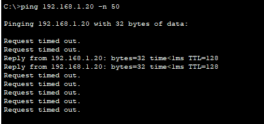
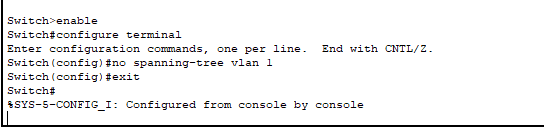
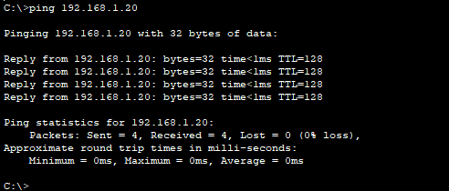

Broadcast Storm Issue
Problem Description
Issue Overview:
A broadcast storm occurs when a network is overwhelmed with broadcast packets that flood the network, consuming bandwidth and processing resources. This Layer 2 issue can severely degrade network performance or even cause a complete network outage as devices become unable to process legitimate traffic.
Common Symptoms:
- Extremely slow network performance
- High CPU utilization on network devices
- Network timeouts and connection failures
- Intermittent connectivity issues
- Excessive broadcast traffic visible in network monitoring tools
- Network devices becoming unresponsive
Root Causes:
- Network loops (physical or logical)
- Spanning Tree Protocol (STP) failures
- Misconfigured or disabled STP
- Faulty network equipment
- Malicious broadcast attacks
- Improper network design with redundant links
Network Setup
Network Components:
- 3x Cisco 2960-24TT Switches (Switch0, Switch1, Switch2)
- Redundant links between switches (creating potential loops)
- 6x Client PCs (PC0-PC5)
Problem Demonstration
Broadcast Storm Symptoms:
During a broadcast storm, ping requests time out as the network becomes overwhelmed with broadcast traffic. Only occasional responses may get through as seen in the image where most packets are lost.
Root Cause:
The root cause of the broadcast storm is disabled Spanning Tree Protocol (STP) on the switches. Without STP, network loops cause broadcast packets to circulate indefinitely, overwhelming the network.
Solution Steps
Step 1: Identify the Loop
First, identify that a broadcast storm is occurring by observing network symptoms such as:
- Failed ping attempts with timeouts
- High CPU utilization on switches
- Excessive broadcast traffic
Step 2: Enable Spanning Tree Protocol
Switch>enable
Switch#configure terminal
Switch(config)#spanning-tree vlan 1
Switch(config)#exit
Switch#
Switch#show spanning-tree vlan 1
VLAN0001
Spanning tree enabled protocol ieee
Root ID Priority 32769
Address 0001.C78A.A8C4
This bridge is the root
Hello Time 2 sec Max Age 20 sec Forward Delay 15 sec
Bridge ID Priority 32769 (priority 32768 sys-id-ext 1)
Address 0001.C78A.A8C4
Hello Time 2 sec Max Age 20 sec Forward Delay 15 sec
Aging Time 20Spanning Tree Protocol (STP) prevents loops by placing redundant links in a blocking state, allowing only one active path between any two network nodes.
Step 3: Apply Configuration to All Switches
The same spanning-tree configuration must be applied to all switches in the network:
- Enable spanning-tree on Switch0
- Enable spanning-tree on Switch1
- Enable spanning-tree on Switch2
This ensures that the entire network is protected against loops and broadcast storms.
Step 4: Verify STP Operation
After enabling STP on all switches, verify that it's working correctly by checking the spanning-tree status:
- One switch becomes the root bridge
- Redundant paths are placed in blocking state (BLK)
- Active paths are in forwarding state (FWD)
In the output above, we can see that the switch has become the root bridge and some interfaces are in forwarding state while one is in blocking state.
Verification and Testing
Successful Network Connectivity:
After implementing STP on all switches, network connectivity is restored with consistent ping responses and normal network operation. The ping statistics show 0% packet loss, confirming the broadcast storm has been resolved.
STP Status:
The spanning-tree output shows:
- STP is enabled and functioning properly
- Root bridge has been elected
- Redundant paths are properly managed (some ports in blocking state)
- Network topology is stable
Troubleshooting Guide
Common Issues and Solutions:
- Issue: STP not enabled on all switches
Solution: Verify and enable STP on all network switches - Issue: Inconsistent STP configurations
Solution: Standardize STP mode and parameters across all switches - Issue: Physical loops created by users
Solution: Implement port security and user education - Issue: Faulty network interface causing broadcast storms
Solution: Identify and replace faulty hardware
Verification Commands:
show spanning-tree- Verify STP is running and check port statesshow interfaces counters- Check for excessive broadcast packetsshow processes cpu sorted- Monitor CPU utilizationping [destination-ip]- Test network connectivity
Best Practices
- Always enable STP on all switches, even in small networks
- Consider using Rapid PVST+ for faster convergence
- Implement storm control as an additional layer of protection
- Document network topology and redundant links
- Monitor broadcast traffic levels as part of regular network maintenance
- Use network monitoring tools to detect broadcast storms early
Packet Tracer Simulation
Download the complete Packet Tracer simulation file to practice this configuration:
Download Simulation File